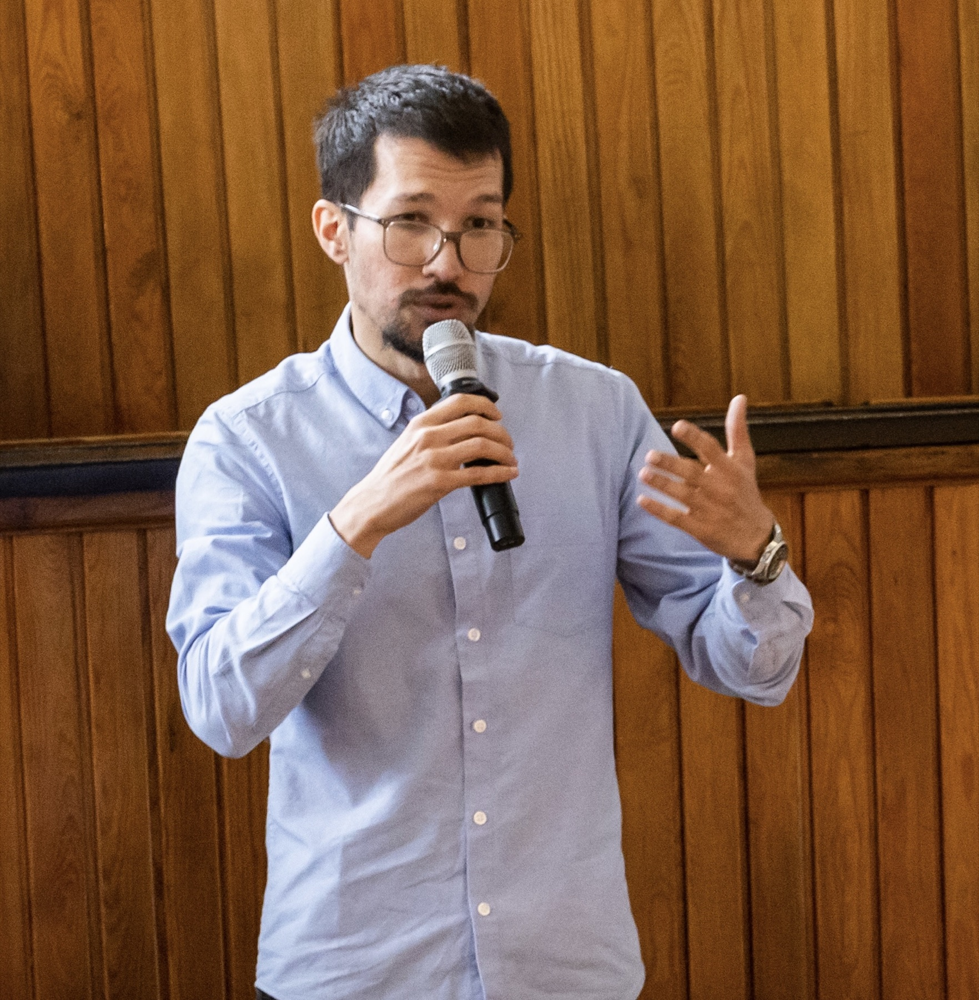

Contact
Research, policy, and speaking inquiries
I welcome academic collaboration, consulting, policy evaluation, advisory work, and speaking requests from research teams, policy institutions, development agencies, and international organizations.
